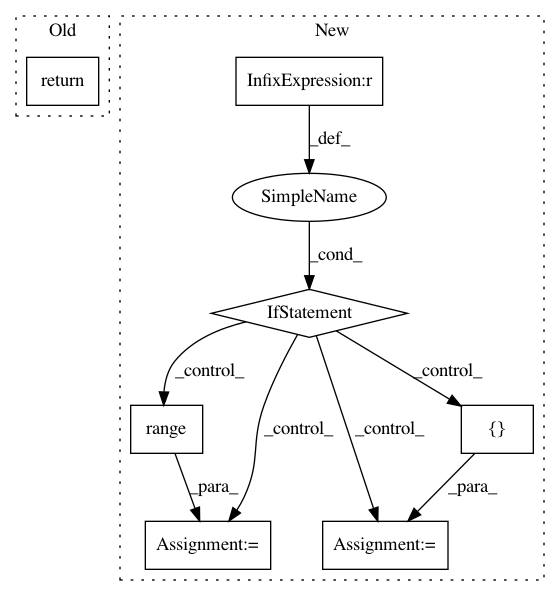

cafa2860a311171fbebde938d14d11bcbb2a5755,keras/layers/convolutional_recurrent.py,ConvRecurrent2D,compute_output_shape,#ConvRecurrent2D#Any#,111
Before Change
rows, cols, self.filters)
else:
if self.data_format == "channels_first":
return (input_shape[0], self.filters, rows, cols)
elif self.data_format == "channels_last":
return (input_shape[0], rows, cols, self.filters)
def get_config(self):
After Change
output_shape = (input_shape[0], rows, cols, self.filters)
if self.return_state:
if self.data_format == "channels_first":
output_shape = [output_shape] + [(input_shape[0], self.filters, rows, cols) for _ in range(2)]
elif self.data_format == "channels_last":
output_shape = [output_shape] + [(input_shape[0], rows, cols, self.filters) for _ in range(2)]
return output_shape
def get_config(self):
config = {"filters": self.filters,
In pattern: SUPERPATTERN
Frequency: 3
Non-data size: 7
Instances
Project Name: keras-team/keras
Commit Name: cafa2860a311171fbebde938d14d11bcbb2a5755
Time: 2017-07-26
Author: ericwu09@gmail.com
File Name: keras/layers/convolutional_recurrent.py
Class Name: ConvRecurrent2D
Method Name: compute_output_shape
Project Name: keras-team/keras
Commit Name: 75bef59016a8a230823a04836e1ab6e5bf0079dc
Time: 2016-04-01
Author: francois.chollet@gmail.com
File Name: keras/backend/tensorflow_backend.py
Class Name:
Method Name: dot
Project Name: microsoft/nni
Commit Name: d165905d0ba24cfba414b8e0c20fa8d7c8ab6a6e
Time: 2020-12-10
Author: Quanlu.Zhang@microsoft.com
File Name: nni/retiarii/operation.py
Class Name: PyTorchOperation
Method Name: to_forward_code